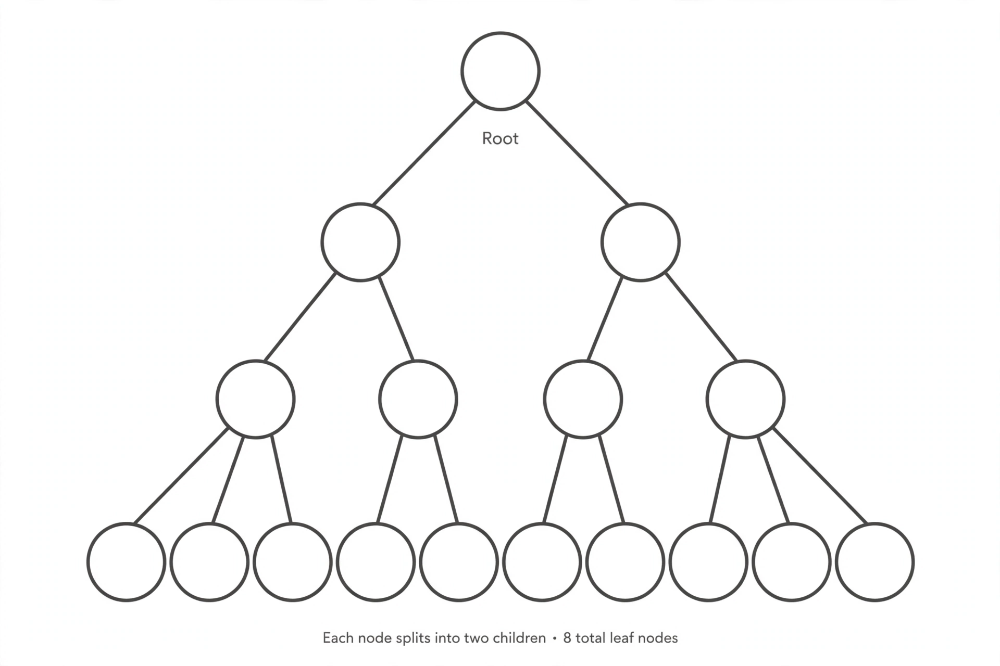

Binary tree

[Image: A rooted tree diagram where each node branches into two children]
In computer science, a binary tree is a tree data structure in which each node has at most two children, referred to as the left and right child. Binary trees underlie searching, sorting, expression evaluation and file systems.
A binary search tree keeps keys ordered so that search, insertion and deletion each take time proportional to the tree's height — fast when the tree is balanced, degenerate when it is not, which motivates self-balancing variants such as red–black trees and AVL trees (the first, invented in 1962 by Adelson-Velsky and Landis).
Traversals
Walking a tree in-order recovers sorted keys; pre-order and post-order traversals serve expression trees and copying or deleting structures. Heaps — trees maintaining a parent-greater-than-children invariant — implement priority queues and the heapsort algorithm.
The same shape appears outside computing: phylogenies, decision trees in statistics, and knockout tournament brackets are all binary trees.